# load packages
library(tidyverse)
library(ggplot2)HW 01
0 - Setting up
setting theme for ggplot2
# set theme for ggplot2
ggplot2::theme_set(ggplot2::theme_minimal(base_size = 14))
# set width of code output
options(width = 65)
# set figure parameters for knitr
knitr::opts_chunk$set(
fig.width = 7, # 7" width
fig.asp = 0.618, # the golden ratio
fig.retina = 3, # dpi multiplier for displaying HTML output on retina
fig.align = "center", # center align figures
dpi = 300 # higher dpi, sharper image
)1 - Road traffic accidents in Edinburgh
library(tidyverse)
library(dsbox)
library(dplyr)
library(ggplot2)Since the dataset ‘accidents’ is present in dsbox which is already loaded, checking if day_of_week column in the dataset has any Null value.
(unique(accidents$day_of_week))[1] Monday Sunday Wednesday Thursday Friday Tuesday
[7] Saturday
7 Levels: Monday Tuesday Wednesday Thursday Friday ... Sundaywriting a function which sets the day_of_week data to either weekends or weekdays and setting function name as Daytype
Daytype <- function(day_of_week) {
ifelse(day_of_week %in% c("Saturday", "Sunday"), "weekend", "weekday")
}creating a new data frame ‘accidentdays’ by chaining operation using the pipe operator. Selecting and mutating data from the ‘accidents’ data frame.
accidentdays <- accidents |>
# selecting only needed columsn from the accidents dataset
select(severity, day_of_week, time) |>
# creating a new column "type_of_day using the Daytype function
mutate(type_of_day = Daytype(day_of_week))Checking if the new data frame ‘accidentdays’ has required data correctly added using the head funtion
head(accidentdays)# A tibble: 6 × 4
severity day_of_week time type_of_day
<fct> <fct> <time> <chr>
1 Slight Monday 14:59 weekday
2 Slight Sunday 12:50 weekend
3 Slight Wednesday 14:34 weekday
4 Slight Monday 02:25 weekday
5 Slight Thursday 09:00 weekday
6 Slight Wednesday 14:15 weekday Creating a density plot to visualize the data distribution of accidents over time and creating facets based on the type_of_date variable.
accidentdays |>
ggplot(aes(x = time, fill = severity)) +
geom_density(alpha = 0.5) +
facet_wrap(~ type_of_day, ncol = 1) +
labs(x = "Time of day",
y = "Density",
title = "Number of accidents throughout the day",
subtitle = "By day of week and severity") +
theme_minimal()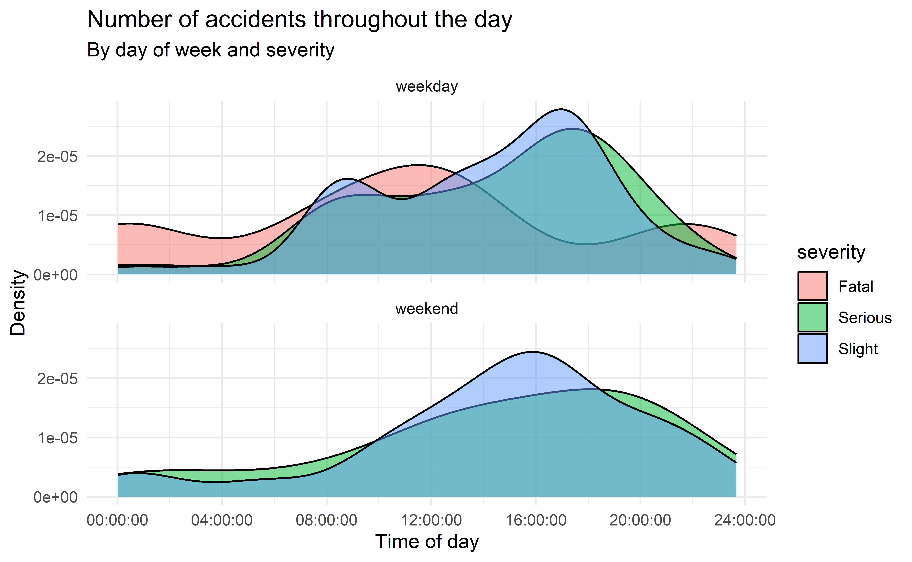
Interpretation of the graphs:-
1) The density curves sheds light on the distribution of accidents over the course of a day and focuses on severity and differentiation between weekdays and weekends.
2) The x-axis represents time of day, which shows the time when most accidents occur. The colours are used to represent the severity of the accident.
3) The plot is divided into two facets i.e. weekdays and weekends, which allows us to know the differences in accident patterns.
4) This plot will help in identifying and getting to know the high-risk hours, severity of accidents and etc.
2 - NYC marathon winners
Loading the packages
library(openintro)
library(ggplot2)a) Plotting a histogram and boxplots of marathon times in the dataset
# Histogram
nyc_marathon |>
ggplot(aes(x = time)) +
geom_histogram(binwidth = 30, fill = "#03fcfc", colour = "black") +
labs(x = "Time (min)",
y = "Frequency",
title = " Distribution of marathon times of all runners") +
theme_minimal()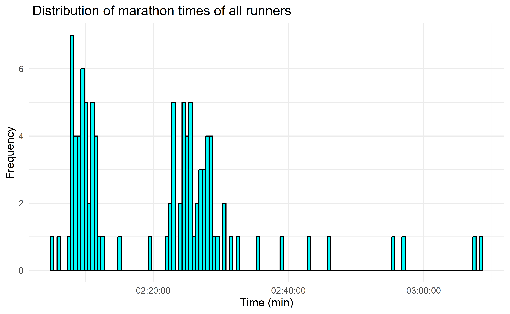
# Boxplot
nyc_marathon |>
ggplot(aes(y = time)) +
geom_boxplot(fill = "red", colour = "black") +
labs(y = "Time (min)",
title = "Marathon times of all runners") +
theme_minimal()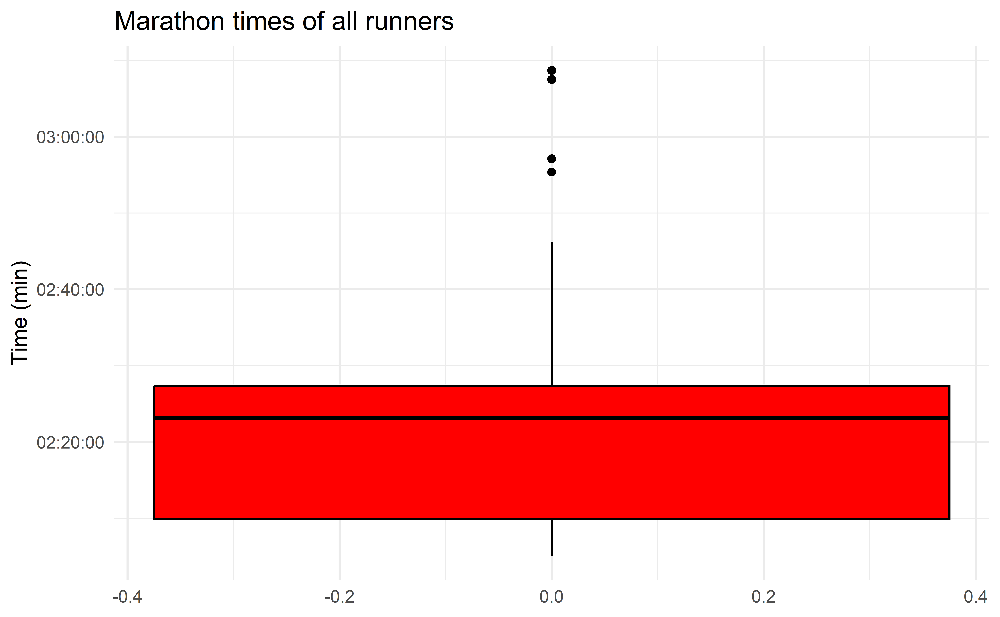
Features apparent to histogram :-
In a histogram, one can readily oserver the distribution’s shape and the binnig of data. helping to determine skewness or symmetry. And it provides insight into the frequency of values within each bin as in the plot.
Features apparent to boxplot:-
The box plot offers a clear depiction of central tendencies such as the median and quartiles, making it easy to identify potential outliers, which are prominently displayed in the plot
b) Creating a side by side boxplots of marathon times for men and women with different colours:-
nyc_marathon |>
ggplot(aes(x = year, y = time, fill = division)) +
geom_boxplot() +
scale_fill_manual(values = c("blue", "red")) +
labs(x = "year",
y = "time(min)",
title = "Marathon times by gender") +
theme_bw()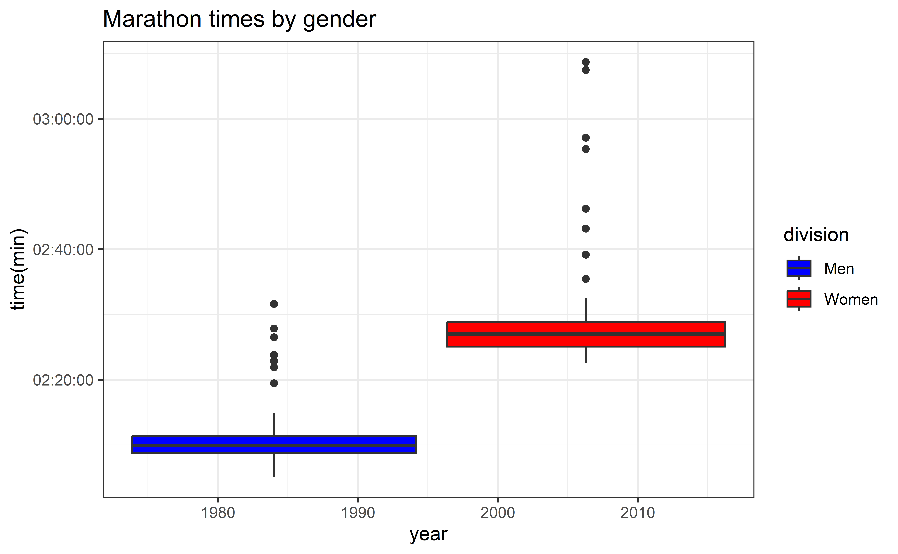
From the plots we can see male runners are quicker that female runners.
c) Creating a plot to avoid the redundancy from the above plot:-
nyc_marathon |>
ggplot(aes(x = division, y = time, fill = division)) +
geom_boxplot() +
scale_fill_manual(values = c("blue", "red")) +
labs(x = "year",
y = "time(min)",
title = "Marathon times over the years by gender") +
theme_bw()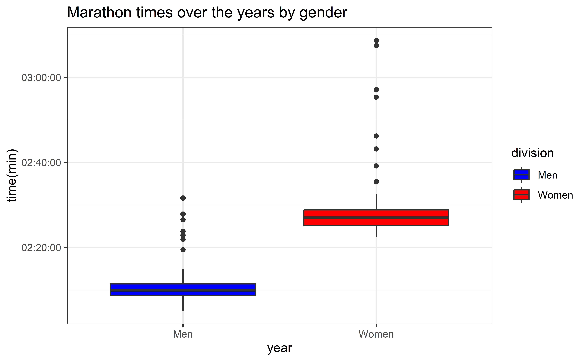
This plot avoids redundancy by not including the year on the x-axis. The data-to-ink ratio is improved as the plot focuses on the comparision between genders.
d) Visualizing the marathon times by gender over the years:-
nyc_marathon |>
ggplot(aes(x = year, y = time, colour = division)) +
geom_point(alpha = 0.5) +
scale_color_manual(values = c("blue", "red")) +
scale_shape_manual(values = c(19, 17)) +
geom_smooth(method = lm, se = F) +
labs(x = "year",
y = "time (min)",
title = "Marathon times over the years") +
theme_bw()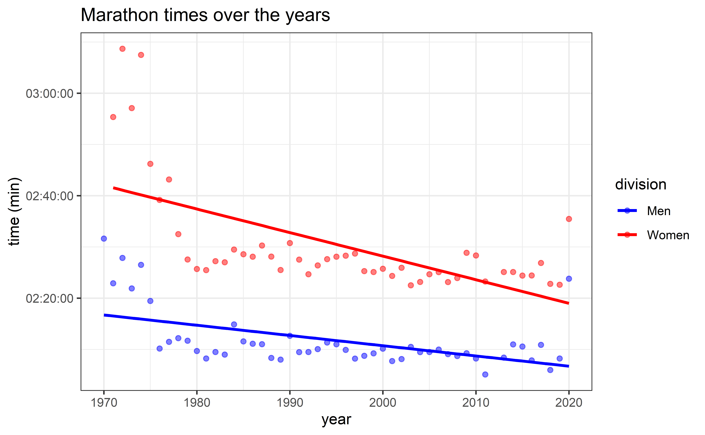
This plot clearly depicts the trends in amount of time taken by runners to complete the marathon. The trends can be seen separately for both the genders and are separated by colours which makes it easy to distinguish.
3 - US counties
a) Part A
library(openintro)
ggplot(county) +
geom_point(aes(x = median_edu, y = median_hh_income)) +
geom_boxplot(aes(x = smoking_ban, y = pop2017))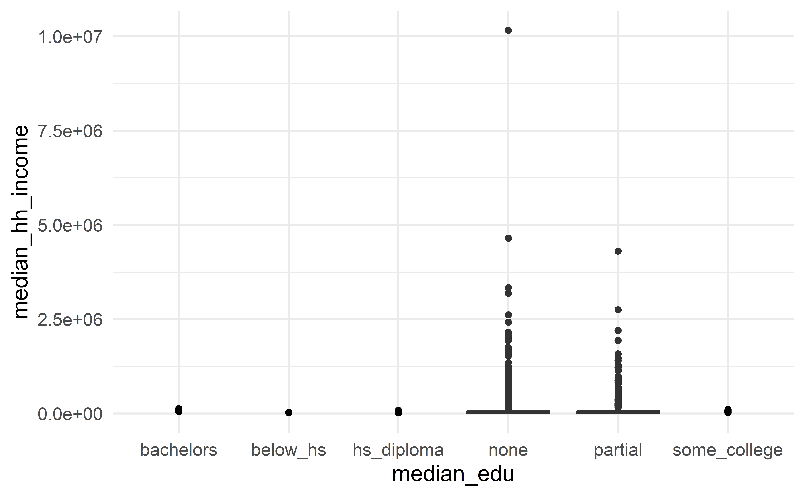
The code attempts to create a scatterplot and boxpot layer on the same canvas. It uses the county dataset and it attempting to plot ‘median_edu’ and ‘median_hh_income’ on x and y respectively using a scatter plot, on the other hand it is attempting to plot ‘smoking_ban’ and ‘pop2017’ on the x and y respectively too using a boxplot.
This does not makes sense if it is trying to plot two different plots on same canvas as we can have only a specific x and y axis to run. This can be corrected if we plot two different plots side by side, as this will help to analyze the data better and can enlighten the meaning from the data.
b) Part B
ggplot(county %>% filter(!is.na(median_edu))) +
geom_point(aes(x = homeownership, y = poverty)) +
facet_grid(median_edu ~ .)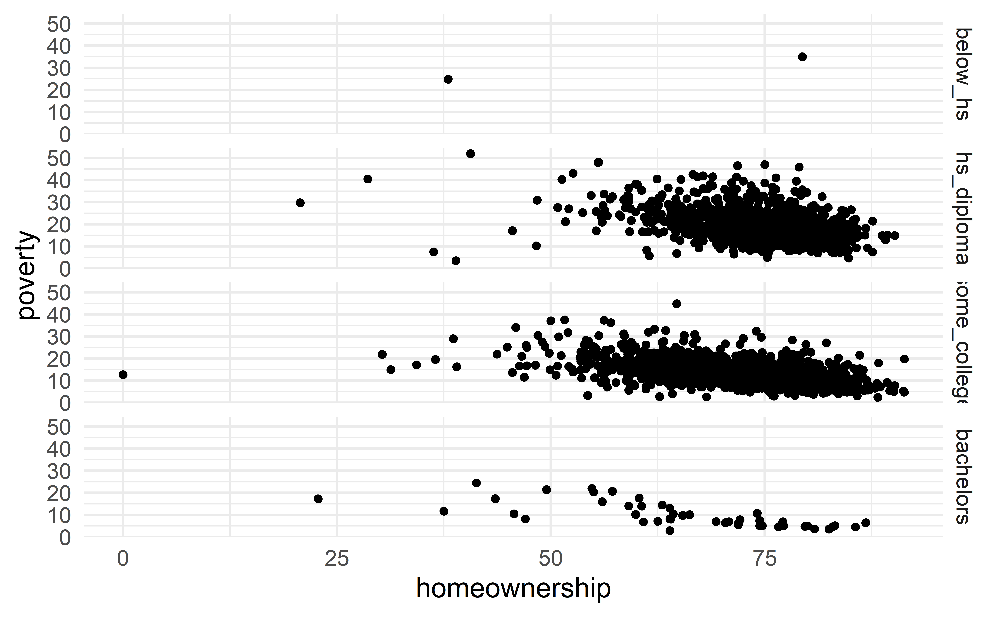
ggplot(county %>% filter(!is.na(median_edu))) +
geom_point(aes(x = homeownership, y = poverty)) +
facet_grid(. ~ median_edu)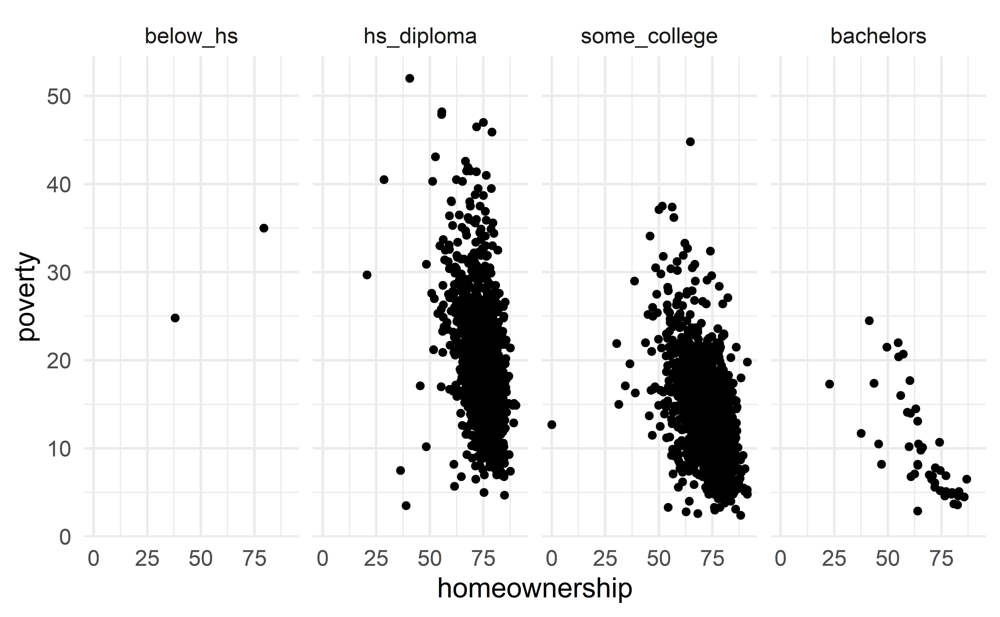
The second plot makes it easier to compare poverty levels across the people from different median education levels (median_edu). Placing the variable of interest on the y-axis while using “median_edu” on the x-axis for a more intuitive and straight forward comparision, as we can easily assess how poverty levels vary horizontally.
In contrast, the first plot with ‘median_edu’ on y-axis can be less intuitive because comparing vertically is typically less effective for comparing multiple categories. Therefore, for comparing variables its generally more suitable to place the variable of interest on the y-axis and the variable being compared on the x-axis.
c) Part C
library(openintro)Plot A
county |>
ggplot(aes(x = homeownership, y = poverty)) +
geom_point()
Plot B
county |>
ggplot(aes(x = homeownership, y = poverty)) +
geom_point() +
geom_smooth(se = FALSE)
Plot C
county |>
ggplot(aes(x = homeownership, y = poverty, group = metro)) +
geom_point() +
geom_smooth(se = FALSE, colour = "green")
Plot D
county |>
ggplot(aes(x = homeownership, y = poverty, group = metro)) +
geom_smooth(se = FALSE) +
geom_point()
Plot E
county |>
ggplot(aes(x = homeownership, y = poverty)) +
geom_smooth(se = FALSE, aes(linetype = metro)) +
geom_point(aes(colour = metro))
Plot F
county |>
ggplot(aes(x = homeownership, y = poverty, colour = metro)) +
geom_point() +
geom_smooth(se = FALSE)
Plot G
county |>
ggplot(aes(x = homeownership, y = poverty)) +
geom_point(aes(colour = metro)) +
geom_smooth(se = FALSE)
Plot H
county |>
ggplot(aes(x = homeownership, y = poverty, colour = metro)) +
geom_point()
4 - Rental apartments in SF
Loading libraries
library(tidyverse)
library(ggplot2)Retriving the raw data from the tidytuesday github repo
rent_raw <- read_csv('https://raw.githubusercontent.com/rfordatascience/tidytuesday/master/data/2022/2022-07-05/rent.csv')From raw data we are selecting the data which is needed for visualization and filtering data to be “San Francisco” city and where the full unit is available for rent.
sf_rent <- rent_raw |>
filter(city == "san francisco" & room_in_apt == 0) |>
select(year, nhood, price, beds)Checking all the neighborhoods in the data.
unique(sf_rent$nhood) [1] "alamo square"
[2] "bayview"
[3] "bernal"
[4] "buena vista park / ashbury hts / corona hts"
[5] "candlestick point"
[6] "castro"
[7] "CCSF"
[8] "civic / van ness"
[9] "cole valley"
[10] "diamond heights"
[11] "downtown"
[12] "excelsior / outer mission"
[13] "financial district"
[14] "glen park"
[15] "haight ashbury"
[16] "hayes valley"
[17] "hunters point"
[18] "ingleside"
[19] "inner richmond"
[20] "inner sunset"
[21] "lakeshore"
[22] "lower haight"
[23] "lower pac hts"
[24] "marina / cow hollow"
[25] "mission district"
[26] "nob hill"
[27] "noe valley"
[28] "NOPA"
[29] "north beach / telegraph hill"
[30] "outer richmond"
[31] "outer sunset"
[32] "pacific heights"
[33] "parkside"
[34] "portola"
[35] "potrero hill"
[36] "presidio hts / laurel hts / lake st"
[37] "russian hill"
[38] "san francisco"
[39] "sea cliff"
[40] "SOMA / south beach"
[41] "tenderloin"
[42] "treasure island"
[43] "twin peaks"
[44] "USF / anza vista"
[45] "visitacion valley"
[46] "west portal / forest hills"
[47] "western addition" Selecting 7 neighborhoods and others are combined to form a “others” block to visualization.
selected_nhood <- c("mission district", "Western addition", "haight ashbury", "marina / cow hollow", "parkside", "inner richmond", "tenderloin", "lakeshore")Mutating the sf_rent data to the selected neighborhoods for visualization.
sf_rent <- sf_rent |>
mutate(nhood = ifelse(nhood %in% selected_nhood, as.character(nhood), "others"))Visualizing the data and creating a box plot to check the Distribution of rental prices in San Francisco.
sf_rent |>
ggplot(aes(x = year, y = price / beds, fill = nhood)) +
geom_boxplot() +
labs(x = "Year",
y = "Price per Bed",
title = "Distribution of Rental prices in San Francisco",
fill = "Neighbourhood") +
theme_minimal() +
theme(legend.position = "top")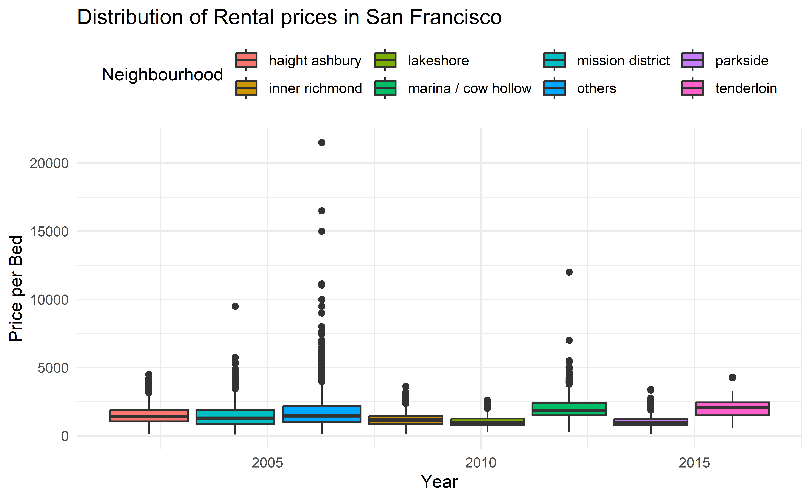
Context -
We have limited the visualization to eight neighborhoods in order to maintain clarity and readability. It provides a comprehensive overview of San Francisco’s rental market and preventing visual clutter and gives good data-to-ink ratio. By focusing on these specific neighborhoods, we can effectively compare rental prices distributions over the time while ensuring the remain informative and aesthetically pleasing.
Interpretation from Plot:-
1) The plot illustrates the distribution of rental prices in San Francisco over the years. Each plot represents a specific or a group of neighborhoods. The variation in boxplot positions and sizes indicates differences in rental prices.
2) We can discern the trends in rental prices by examining the plots over the years and we can see the neighborhood “Marina / Cow Hollow” appears to be consistently having higher median prices per bed whereas “tenderloin” has the lower median compared to other neighborhoods.
3) Outliers in the boxplot, such as “Mission district” in recent years, shows significant deviations from the neighborhood’s typical rental pricing. These outliers provides insights for renters and policymakers in understanding and navigating San Francisco’s rental market.
5 - Napoleon’s march.
Link to source –> http://euclid.psych.yorku.ca/www/psy6135/tutorials/Minard.html
Reading data and understanding it
napoleon <- readRDS("data/napoleon.rds")
str(napoleon$troops)spc_tbl_ [51 × 5] (S3: spec_tbl_df/tbl_df/tbl/data.frame)
$ long : num [1:51] 24 24.5 25.5 26 27 28 28.5 29 30 30.3 ...
$ lat : num [1:51] 54.9 55 54.5 54.7 54.8 54.9 55 55.1 55.2 55.3 ...
$ survivors: num [1:51] 340000 340000 340000 320000 300000 280000 240000 210000 180000 175000 ...
$ direction: chr [1:51] "advancing" "advancing" "advancing" "advancing" ...
$ group : num [1:51] 1 1 1 1 1 1 1 1 1 1 ...
- attr(*, "spec")=
.. cols(
.. long = col_double(),
.. lat = col_double(),
.. survivors = col_double(),
.. direction = col_character(),
.. group = col_double()
.. )
- attr(*, "problems")=<externalptr> str(napoleon$cities)spc_tbl_ [20 × 3] (S3: spec_tbl_df/tbl_df/tbl/data.frame)
$ long: num [1:20] 24 25.3 26.4 26.8 27.7 27.6 28.5 28.7 29.2 30.2 ...
$ lat : num [1:20] 55 54.7 54.4 54.3 55.2 53.9 54.3 55.5 54.4 55.3 ...
$ city: chr [1:20] "Kowno" "Wilna" "Smorgoni" "Moiodexno" ...
- attr(*, "spec")=
.. cols(
.. long = col_double(),
.. lat = col_double(),
.. city = col_character()
.. )
- attr(*, "problems")=<externalptr> str(napoleon$temperatures)spc_tbl_ [9 × 5] (S3: spec_tbl_df/tbl_df/tbl/data.frame)
$ long : num [1:9] 37.6 36 33.2 32 29.2 28.5 27.2 26.7 25.3
$ temp : num [1:9] 0 0 -9 -21 -11 -20 -24 -30 -26
$ month: chr [1:9] "Oct" "Oct" "Nov" "Nov" ...
$ day : num [1:9] 18 24 9 14 24 28 1 6 7
$ date : Date[1:9], format: "1812-10-18" ...
- attr(*, "spec")=
.. cols(
.. long = col_double(),
.. temp = col_double(),
.. month = col_character(),
.. day = col_double(),
.. date = col_character()
.. )
- attr(*, "problems")=<externalptr> Loading libraries and installing the packages
# install.packages("gridExtra")
# install.packages("scales")
library(ggplot2)
library(scales)
library(grid)
library(gridExtra)
library(dplyr)Plotting a graph napolean_troops with long and lat at x and y axes respectively
ggplot(napoleon$troops, aes(long, lat)) +
geom_path(aes(line_width = survivors))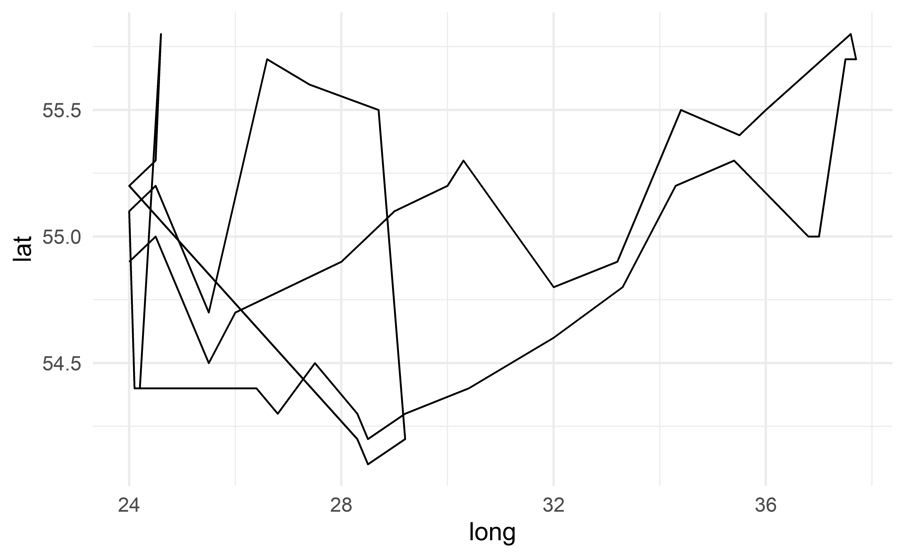
Plotting the graph in different colours based on the paths taken by the troops, to make it easy to understand
ggplot(napoleon$troops, aes(long, lat)) +
geom_path(aes(size = survivors, colour = direction, group = group)) +
coord_fixed() #fixing coordinates based on aspect ratio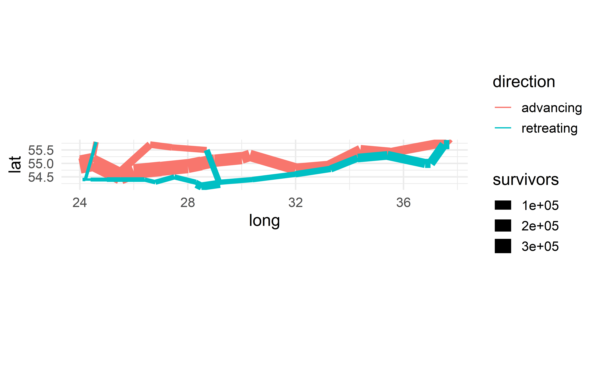
Arranging the scales to fit the data into the graph
breaks <- c(1, 2, 3) * 10^5 #fixing the x-axis readability
ggplot(napoleon$troops, aes(long, lat)) +
geom_path(aes(size = survivors, colour = direction, group = group), lineend = "round") +
scale_size("Survivors", range = c(1,10), breaks = breaks, labels = scales::comma(breaks))+
scale_color_hue("Direction", labels = c("Advance", "Retreat"))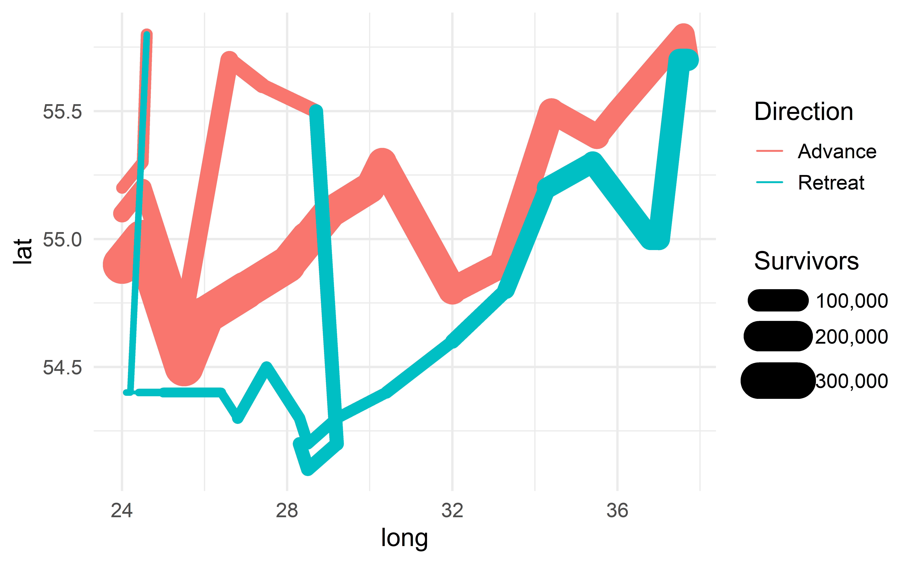
Storing the plot in graph_troops
graph_troops <- last_plot()Adding cities along the path taken by troops
graph_troops + geom_text(data = napoleon$cities, aes(label = city), size = 4)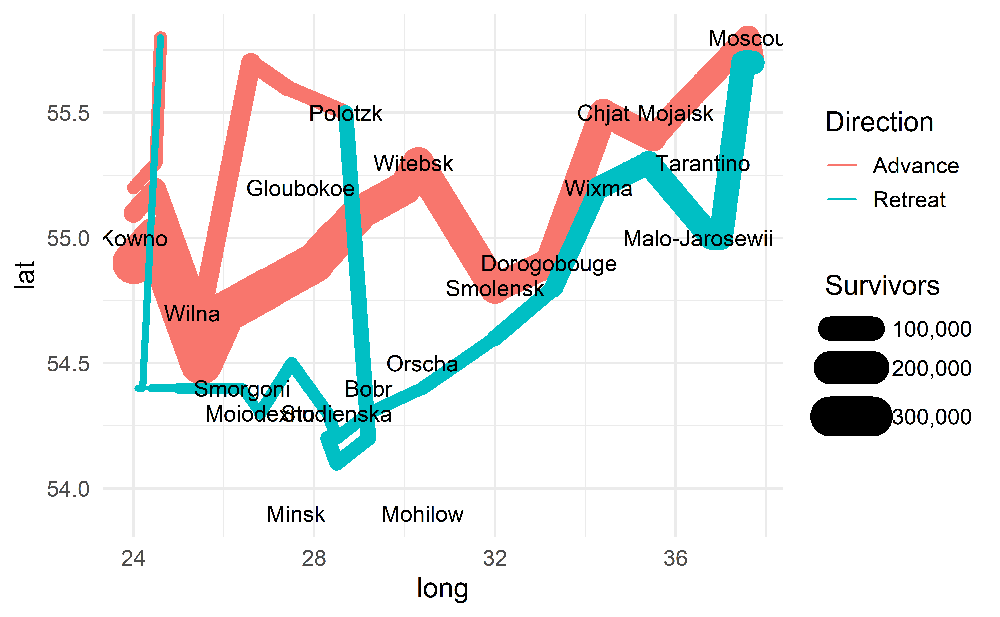
Adjusting the cities into the plot
graph_troops + geom_point(data = napoleon$cities) +
geom_text(data = napoleon$cities, aes(label = city), vjust = 1.5, family = "Times New Roman" )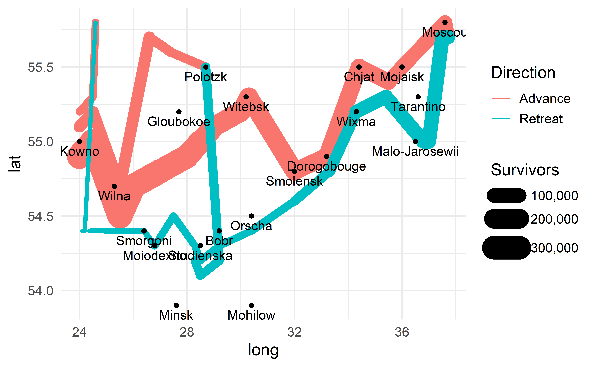
Using ggrepel() to plot overlapping points/paths separately
# install.packages("ggrepel")
library(ggplot2)
library(ggrepel)
graph_troops + geom_point(data = napoleon$cities) +
geom_text_repel(data = napoleon$cities, aes(label = city))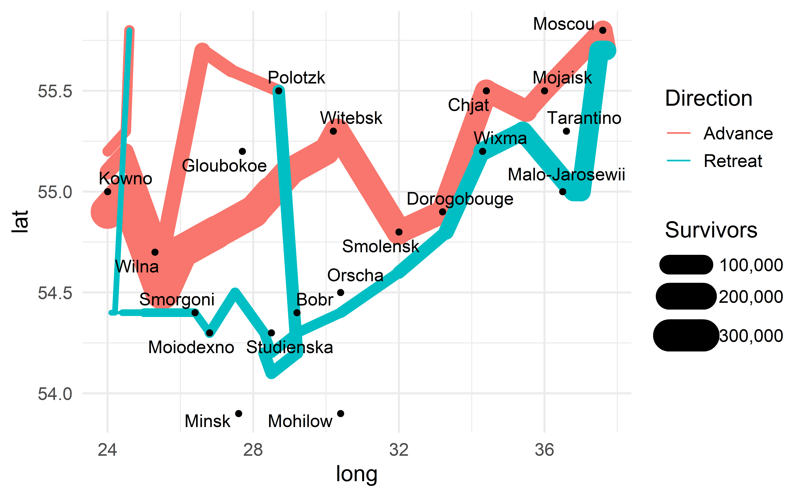
Saving the plot from troops and cities data graph_troops_cities
graph_troops_cities <- last_plot()Reading and understanding the temp data set
napoleon$temperatures# A tibble: 9 × 5
long temp month day date
<dbl> <dbl> <chr> <dbl> <date>
1 37.6 0 Oct 18 1812-10-18
2 36 0 Oct 24 1812-10-24
3 33.2 -9 Nov 9 1812-11-09
4 32 -21 Nov 14 1812-11-14
5 29.2 -11 Nov 24 1812-11-24
6 28.5 -20 Nov 28 1812-11-28
7 27.2 -24 Dec 1 1812-12-01
8 26.7 -30 Dec 6 1812-12-06
9 25.3 -26 Dec 7 1812-12-07Plotting temperature using line plot
ggplot(napoleon$temperatures, aes(long, temp)) +
geom_path(color = "black", size = 1.5) +
geom_point(size = 2)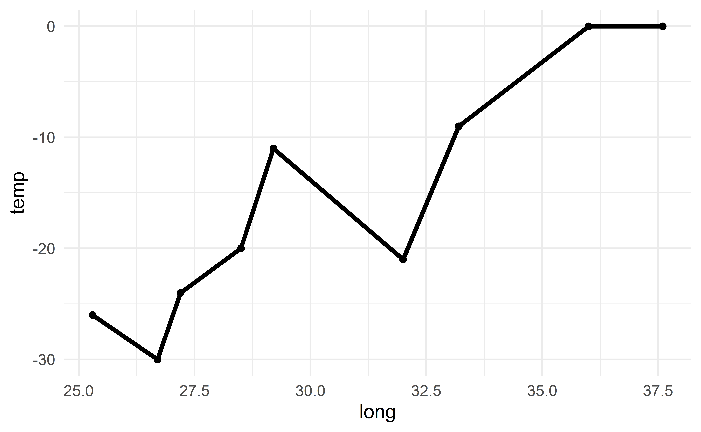
Labelling the temperature at different points on the plot
library(dplyr)
napoleon_temp <- napoleon$temperatures %>%
mutate(format_degrees = paste0(temp, "?? ", date))
head(napoleon_temp$format_degrees)[1] "0?? 1812-10-18" "0?? 1812-10-24" "-9?? 1812-11-09"
[4] "-21?? 1812-11-14" "-11?? 1812-11-24" "-20?? 1812-11-28"Plotting the graph
ggplot(napoleon_temp, aes(long, temp)) +
geom_path(color = "grey", size = 1.5) +
geom_point(size = 1) +
geom_text_repel(aes(label = format_degrees), size=2.5)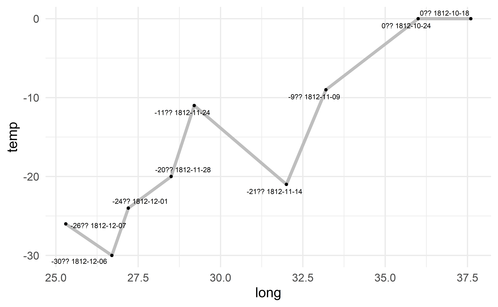
Saving the graph for temperature across different dates
graph_temp <- last_plot()Compiling all graphs together using gridExtra library
library(gridExtra)
grid.arrange(graph_troops_cities, graph_temp)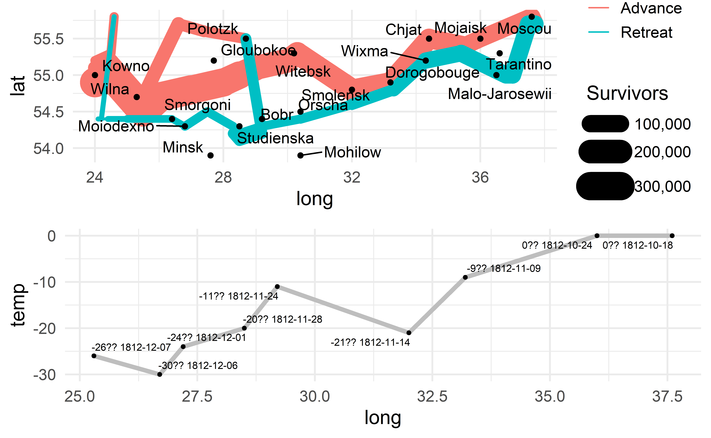
Removing the labels in the plot for checking the movement of troops and cities to match the temperature plot
library(ggplot2)
graph_troops_cities + coord_cartesian(xlim = c(24, 38)) +
labs(x = NULL, y = NULL) + guides(color = FALSE, size = FALSE) +
theme_void()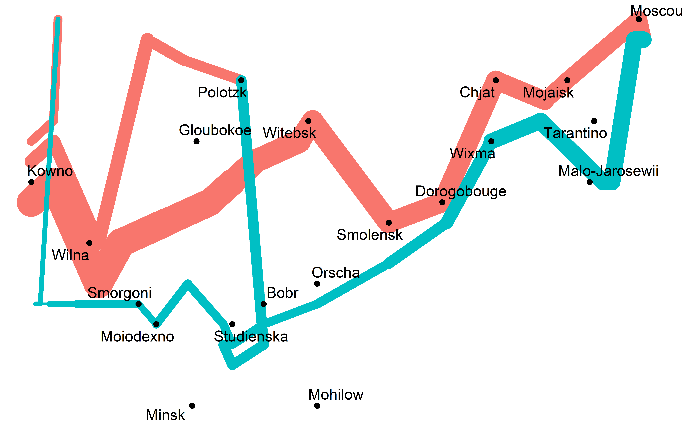
graph_troops_cities_edited <- last_plot()Using similar edits on the temperature graph and adjusting it
graph_temp +
coord_cartesian(xlim = c(24, 38)) +
labs(x = NULL, y = "Temperature") +
theme_bw() +
theme(panel.grid.major.x = element_blank(), panel.grid.minor.x = element_blank(),
panel.grid.minor.y = element_blank(), axis.text.x = element_blank(), axis.ticks = element_blank(),
panel.border = element_blank())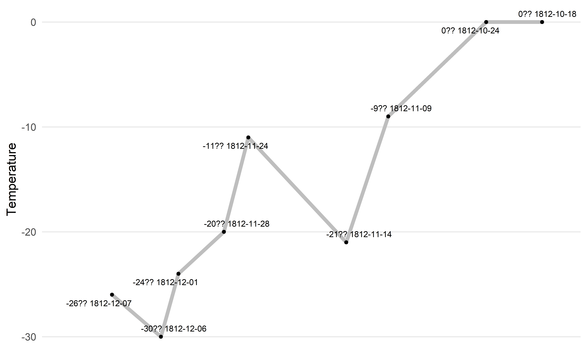
graph_temp_edited <- last_plot()Plotting the entire graph together
library(grid)
library(gridExtra)
grid.arrange(graph_troops_cities_edited, graph_temp_edited, nrow=2, heights=c(3.5, 1.2))
grid.rect(width = .99, height = .99, gp = gpar(lwd = 2, col = "gray", fill = NA))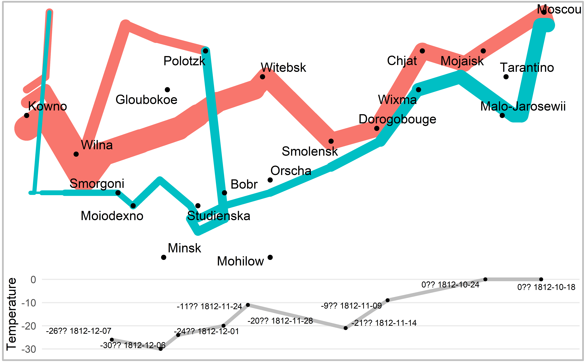
Citation :
These citations are used to understand the basic plot and way of plotting the Napoleon’s march.
--> http://euclid.psych.yorku.ca/www/psy6135/tutorials/Minard.html
--> https://www.andrewheiss.com/blog/2017/08/10/exploring-minards-1812-plot-with-ggplot2/
--> https://gist.github.com/friendly/36e8d6643c35a23e9e445230eb266bd3